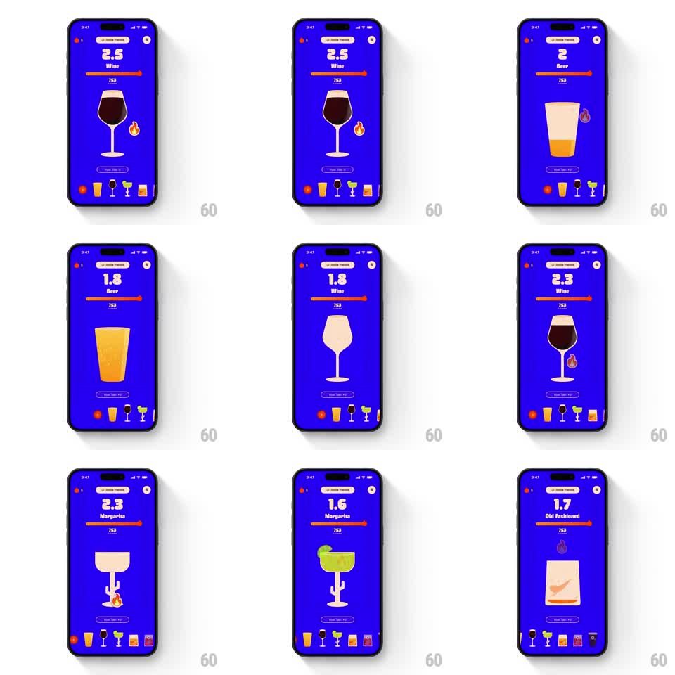

Media
Frame-by-frame

Rebuild this animation 1:1: BurnBar's glass morph - selecting a drink from the bottom icon row swaps the hero glass (wine glass, beer pint, margarita coupe, tumbler), fills it with the right liquid in a rising wave, and rolls the big "glass of X" counter to the new value.

Rebuild this animation 1:1: BurnBar's glass morph - selecting a drink from the bottom icon row swaps the hero glass (wine glass, beer pint, margarita coupe, tumbler), fills it with the right liquid in a rising wave, and rolls the big "glass of X" counter to the new value.
## Integration
Integration: stack-agnostic spec - springs given as stiffness/damping, timed motions as duration + curve; map every value to your framework and animation library of choice.
## Scene
Electric-blue tracker screen: streak pill top-center ("2 drinks tracked"), a huge counter ("2.5") with drink name under it, a thin progress bar, the hero glass mid-screen, a small flame badge to its right, "How many beers?" pill under the glass, and a bottom row of drink icons with a selection dot.
## Motion spec
Pattern: cross-morph glass swap with liquid fill on selection.
- Old glass drains (liquid level falls to 0, 250ms, ease-in) and dissolves (scale 0.9, fade 150ms) as the new glass outline draws in.
- New glass fills bottom-up with its liquid (300ms, ease-out) with a sloshing wave surface (surface tilts +/- 4 degrees, settles with a spring ~180/12).
- Counter rolls to the new value with digit-by-digit odometer ticks (40ms per digit), and the drink name crossfades.
- Progress bar slides to the new fill (250ms, ease-out).
- The selected icon in the bottom row lifts 4px with its dot popping in.
## Calibration
- Liquid color and fill level are per-drink - wine is dark and low, beer is golden and full with foam.
- The glass shapes are simple line silhouettes; the morph is about fill and outline, not 3D.
## Reduced motion
Glass and counter crossfade (200ms); bar slides without the wave.
## Don't miss
- The liquid surface slosh is the tactile moment - keep the two-bounce settle.
- The flame badge flickers subtly while the glass refills.